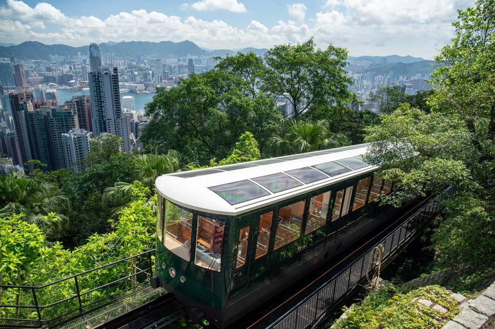
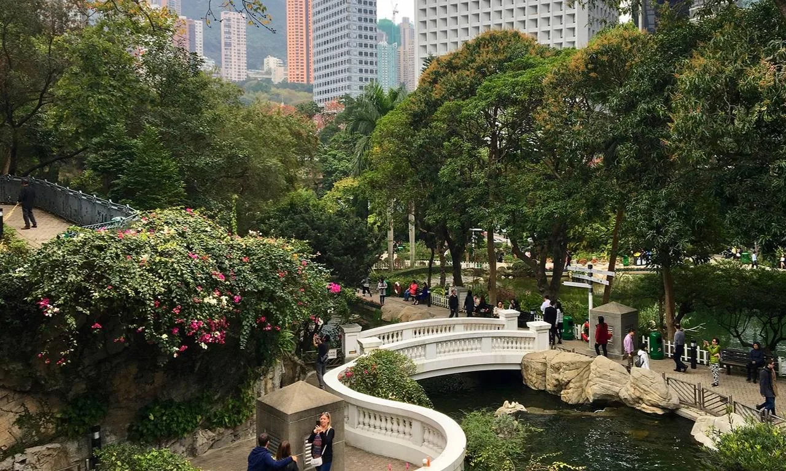
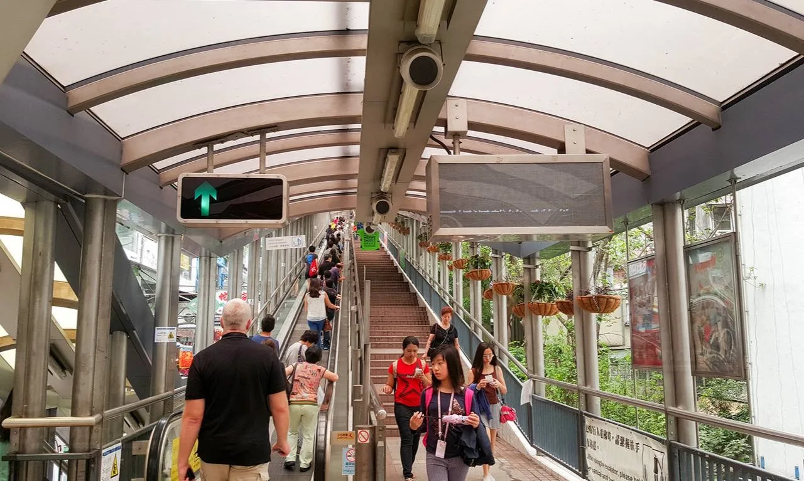
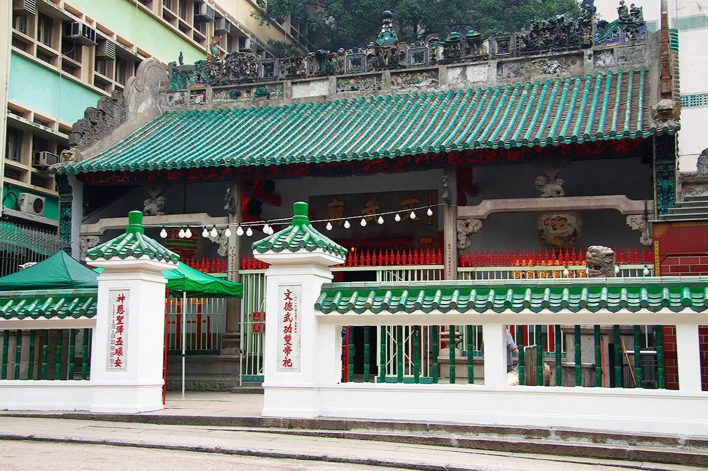
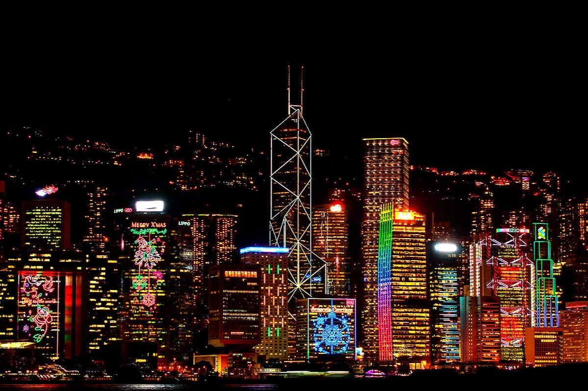

ГОНКОНГ 香港
Маршрут по главным локациям Гонконга на 1 день
1. Пик Виктория (Victoria Peak)
С вершины открывается панорама Гонконгского острова, небоскребов Центрального района и гавани Виктория. Подняться можно на Peak Tram — историческом горном трамвае. На площадке Sky Terrace 428 есть отличные точки для фото.
2. Гонконгский парк (Hong Kong Park)
Современный городской парк-оазис с водопадами, прудами и лилиями. Вдоль прогулочных троп — пышная тропическая растительность. Также можно увидеть птичник, оранжерею, Музей чайных принадлежностей, Гонконгский центр изобразительных искусств.
Часы работы: 6:00–23:00
Метро: Admiralty Station
3. Уличные эскалаторы (Central Mid-Levels Escalators)
Самая длинная система уличных эскалаторов в мире. Она соединяет Queen's Road и Conduit Road. До 10 утра направление движения — вниз, после и до полуночи — вверх. Находясь на эскалаторе, можно увидеть барные улицы, кафе, сувенирные лавки.
Часы работы: 6:00–00:00
Метро: Central
4. Храм Мань Мо (Man Mo Temple)
Храм был построен между 1847 и 1862 годами и контрастирует с динамикой города. Внутри — спиральные курильницы с дымом благовоний, бронзовые колокола и статуи богов Литературы и Войны. В храме можно пройти традиционное гадание.
Часы работы: 8:00–18:00
Метро: Sheung Wan
5. Набережная Цим Ша Цуй (Tsim Sha Tsui Promenade)
Небоскребы отражаются в воде, а набережная тянется вдоль Гонконгского культурного центра и «Авеню звезд» (там можно увидеть скульптуры Брюса Ли, Джеки Чана и др.) В 20:00 ежедневно проходит «Симфония огней» — самое крупное в мире постоянное светозвуковое шоу.
Метро: Tsim Sha Tsui
[Фотография оригинала — восстановление]





К оглавлению